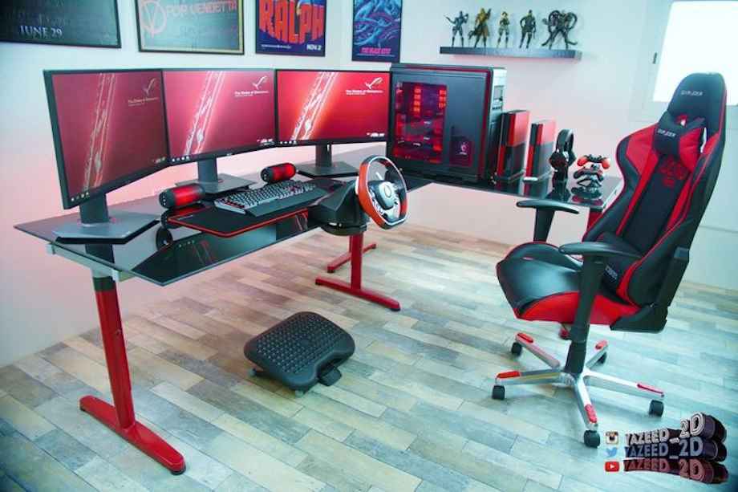

Nous allons commencer par la console de salon la plus commune : Xbox One
Ensuite, nous allons poursuivre avec la PlayStation 4. Avec la Xbox one, ce sont les deux consoles de salons les plus communes
Pour la dernière console de salon, nous retrouverons la Wii U et la Switch (sortie récemment). Moins performante que les deux autres mais tout aussi amusant, elle est en troisième place.
Et finalement, c'est LA console de jeux vidéo la plus répendue et populaire chez les gamers. Voici l'ordinateur de gaming, ou tout simplement ordinateur c'est comme vous voulez! 
Personellement, je crois que malgré le prix que peut coûter un ordinateur, les prix des jeux sur des sites tels que Steam ou G2A sont très avantageux. Cela dit c'est une copie digitale du jeu donc tu y aura accès seulement par ton compte.(G2A étant un site de revente de jeu)